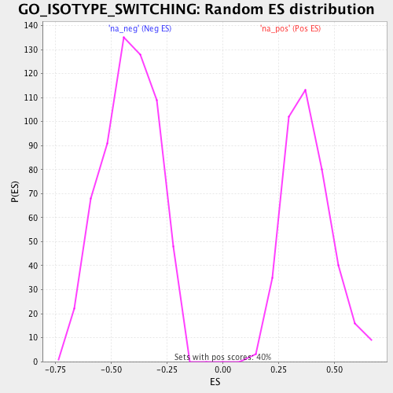

| | | Dataset | BG_HG_nDM_DM |
| Phenotype | NoPhenotypeAvailable |
| Upregulated in class | na_pos |
| GeneSet | GO_ISOTYPE_SWITCHING |
| Enrichment Score (ES) | 0.79100597 |
| Normalized Enrichment Score (NES) | 2.0869439 |
| Nominal p-value | 0.0 |
| FDR q-value | 0.003092657 |
| FWER p-Value | 0.031 |
Table: GSEA Results Summary
 Fig 1: Enrichment plot: GO_ISOTYPE_SWITCHING
Fig 1: Enrichment plot: GO_ISOTYPE_SWITCHING
Profile of the Running ES Score & Positions of GeneSet Members on the Rank Ordered List
| PROBE | GENE SYMBOL | GENE_TITLE | RANK IN GENE LIST | RANK METRIC SCORE | RUNNING ES | CORE ENRICHMENT | | 1 | HSPD1 | | | 49 | 4.015 | 0.1709 | Yes |
| 2 | AICDA | | | 71 | 3.738 | 0.3321 | Yes |
| 3 | ERCC1 | | | 286 | 2.722 | 0.4323 | Yes |
| 4 | MSH2 | | | 652 | 2.083 | 0.4916 | Yes |
| 5 | RNF8 | | | 667 | 2.057 | 0.5801 | Yes |
| 6 | EXOSC3 | | | 949 | 1.771 | 0.6330 | Yes |
| 7 | LIG4 | | | 964 | 1.758 | 0.7085 | Yes |
| 8 | NBN | | | 1250 | 1.530 | 0.7506 | Yes |
| 9 | EXO1 | | | 1471 | 1.364 | 0.7910 | Yes |
| 10 | BATF | | | 2731 | 0.793 | 0.7167 | No |
| 11 | SWAP70 | | | 4024 | 0.419 | 0.6233 | No |
| 12 | MSH6 | | | 5011 | 0.208 | 0.5470 | No |
| 13 | MLH1 | | | 5789 | 0.057 | 0.4823 | No |
| 14 | RNF168 | | | 6729 | -0.125 | 0.4066 | No |
| 15 | EXOSC6 | | | 7456 | -0.290 | 0.3565 | No |
Table: GSEA details [plain text format]

Fig 2: GO_ISOTYPE_SWITCHING: Random ES distribution
Gene set null distribution of ES for GO_ISOTYPE_SWITCHING